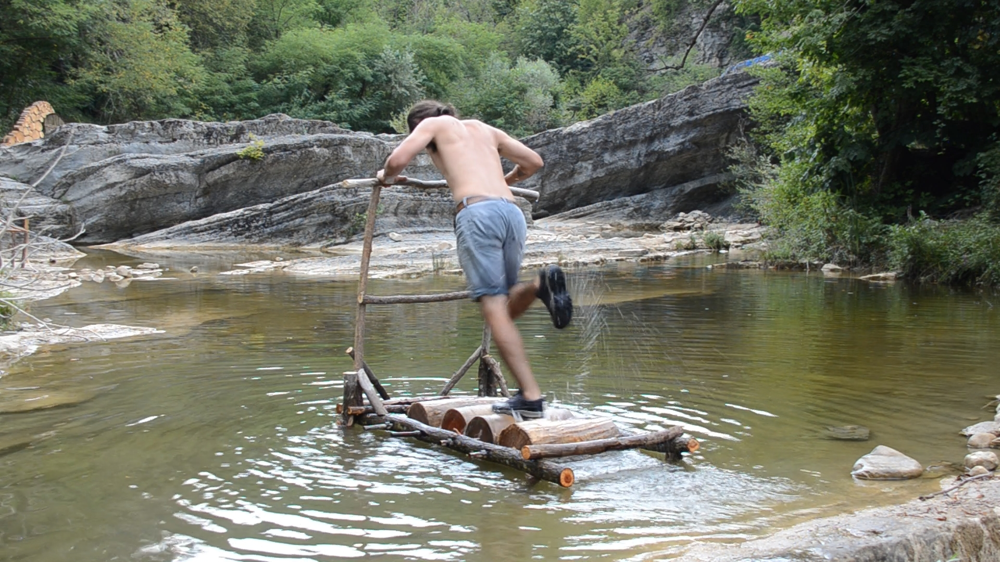

At the beginning of every river stands a treadmill, video still, 2024
I am an artist working across installation, performance, and video, based in Veliko Tarnovo, Bulgaria. My artworks are often created within peripheral and transitional spaces. I work with natural and industrial materials—and often with my body as a medium. My work often uses speculation, fiction, and humor as a strategy to communicate with the viewer.
A central body of my practice combines video, performance, and land art into landscape interventions. These are simple, gestural, ephemeral, and often physical acts, in which I enter into dialogue with my surrounding environment, often with the help of self-made performative objects. Through repetitive, Sisyphean action and movement, and by placing myself under conditions of instability and transience, I question the human imprint on nature and the environment.
My work is often connected with local communities and is strongly context dependent. The social aspect of my practice comes from a deep human curiosity about the ways communities form, endure, and dissolve in this era of advanced globalization, marked by the continual shifting of perspectives and identities within a metamodern world.
Since 2022, I have been part of Duppini Art Group, organizers of the International Gabrovtsi ART-NATURE Symposium—a platform that brings together local and international artists to work in the fields of land art, site-specific practices, and nature-based art in the village of Gabrovtsi.